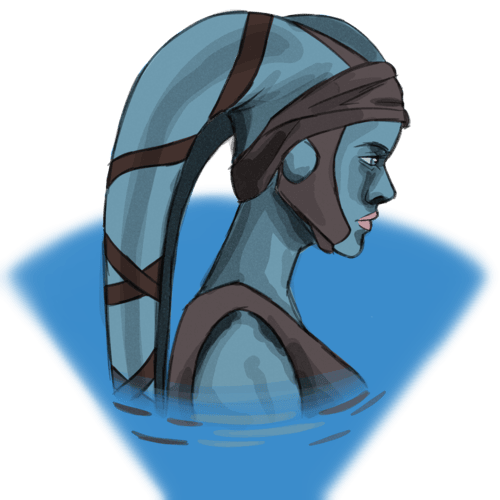

Twi'lek
Twi'leks are graceful beings known for their intellect and agility. Hailing from the harsh deserts of Ryloth, they have a natural resilience and resourcefulness that aids them in navigating difficult circumstances. Often seen as symbols of hope and defiance, Twi'leks are determined fighters who stand firm for their beliefs. Their survival skills and adaptability make them valued allies in any endeavor.
Twi'lek Traits
Ability Scores
Your Intelligence score increases by 2 and your dexterity score increases by 1.
Age
Twi'leks live for around 75 years.
Alignment
Twi'leks will fight for what they feel is right, so they tend towards lawful alignments
Size
Twi'leks stand at around 2 meters tall.
Movement
Twi'leks have a movement speed of 30ft
Languages
Twi'leks speak Basic and one other language of your choice.
Rebels Rising
Per long rest gain 1d6 temporary hit points. Add an additional 1d6 at levels 3, 7, 13, and 20.
Survivors
Pick two proficiencies from Nature, Survival, and Stealth.